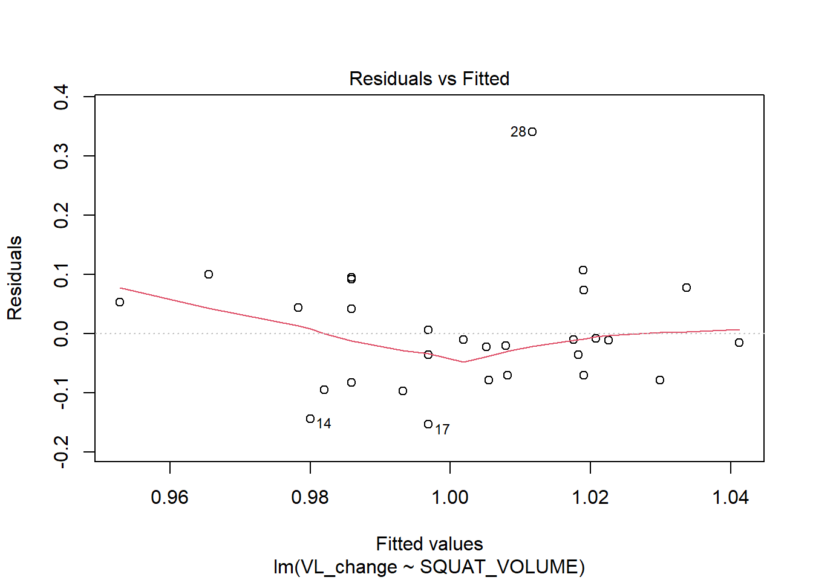
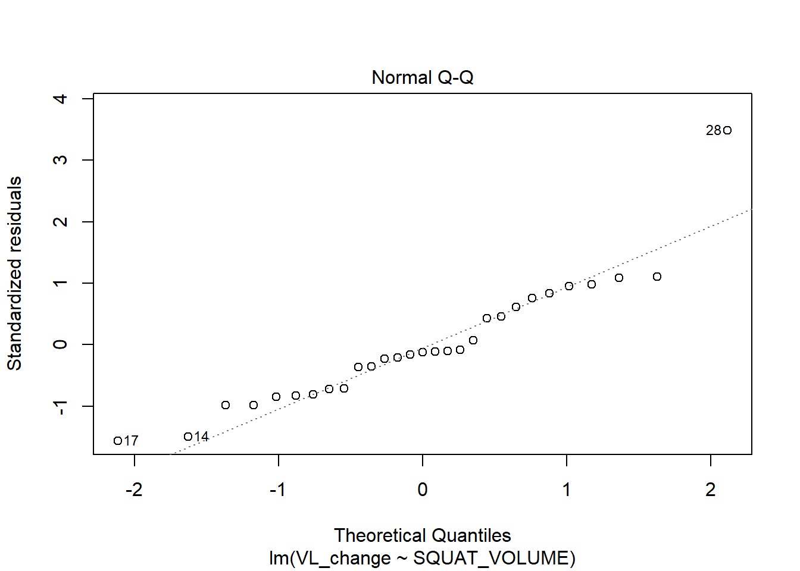
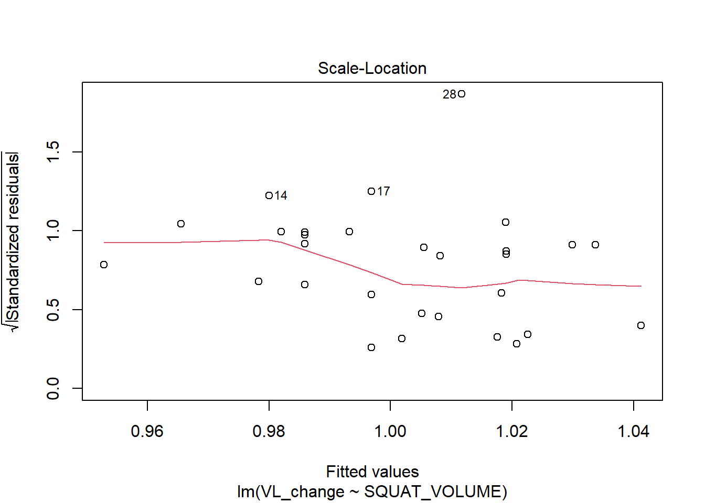
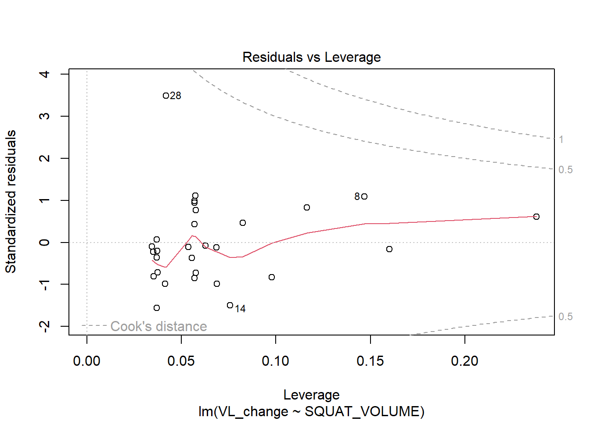
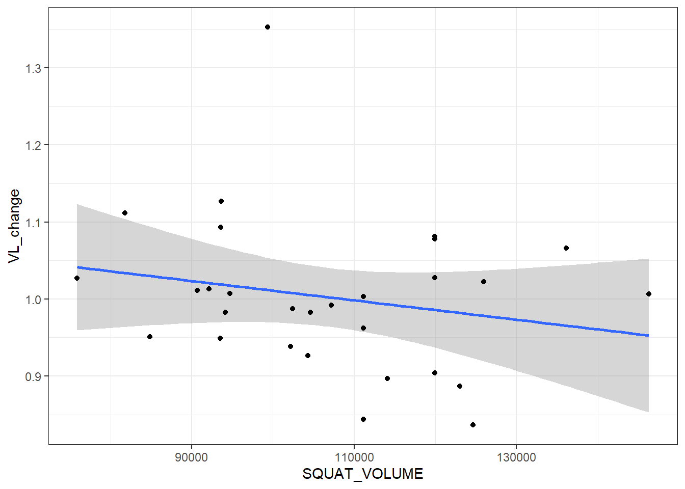

| Subject | LT at 2 mmol*L | LT at 4 mmol*L | ||||||
|---|---|---|---|---|---|---|---|---|
| Pre | Meso1 | Meso2 | Meso3 | Pre | Meso1 | Meso2 | Meso3 | |
| 1 | 212 | 251 | 245 | 243 | 255 | 293 | 289 | 284 |
| 2 | 217 | 248 | 248 | 253 | 260 | 286 | 282 | 289 |
| 3 | 272 | 297 | 320 | 310 | 314 | 335 | 358 | 353 |
| 4 | 220 | 214 | 202 | 224 | 266 | 244 | 243 | 263 |
| Showing the first 4 rows in the dataset | ||||||||
| Abbriviations: LT, lactate threshold | ||||||||
Arbeidskrav 2
Oppgave 1
Vi valgte å bruke cyclingstudy datasettet istedenfor reliabilitets-datasettet vårt ettersom vi ikke testet laktatprofiler. Cyclingstudy-datasettet inneholder 21 forsøkpersoner hvor de aller fleste har gjennomført en laktatprofil på fire ulike tidspunkt (pre, meso1, meso2, og meso3). I cyclingstudy datasettet tilførte vi en tredjegrads polynominal regresjonsmodell som predikerer laktatet utifra watt for å fange opp laktatkurven (sammenhengen mellom wattbelstninger og faktiske laktatverdier). Videre har vi regnet ut effektutvikling (watt) ved fikserte blodlaktatverdier (2- og 4 mmol*L) med metoden “inverse prediction”. Table 1 viser de predikerte verdiene for fire av deltakerne.
Vi undersøkte også reliabiliteten til de to fikserte laktatverdiene. I Table 2 ser vi at den relative typiske feilen er lavest for utregning på 4mmol med CV = 4.1 kontra 2mmol med CV = 9.2.
| Lactate [BLa-] | M | CV |
|---|---|---|
| 2 mmol*L | 230.5 | 9.2 |
| 4 mmol*L | 273.8 | 4.1 |
| Abbriviations: M, mean; CV, coefficient of variations | ||
Oppgave 2
# Create a data frame of known distances and molecular weights
ladder <- data.frame(dist = c(448, 471.5, 501.5, 533.5, 572.5, 622.5, 678.5, 751.5, 790.5, 843.5, 901.5, 963.5, 1041.5),
mw = c(1000, 900, 800,
700, 600, 500,
400, 300, 250,
200,150, 100, 50))
# Create a new data frame of unknowns
unknown <- data.frame(dist = c(
530.5, 666.5, 730.5, 1022.5,
528.5, 664.5, 727.5, 1020.5,
517.5, 657.5, 719.5, NA))
# Fit the model
cal <- lm(log(mw) ~ dist, data = ladder)
# Check model performance, R^2 should be ~ 1.
summary(cal)
Call:
lm(formula = log(mw) ~ dist, data = ladder)
Residuals:
Min 1Q Median 3Q Max
-0.33250 -0.05512 0.00023 0.11713 0.13889
Coefficients:
Estimate Std. Error t value Pr(>|t|)
(Intercept) 9.0570506 0.1420451 63.76 1.75e-15 ***
dist -0.0046208 0.0001955 -23.63 8.86e-11 ***
---
Signif. codes: 0 '***' 0.001 '**' 0.01 '*' 0.05 '.' 0.1 ' ' 1
Residual standard error: 0.1331 on 11 degrees of freedom
Multiple R-squared: 0.9807, Adjusted R-squared: 0.9789
F-statistic: 558.5 on 1 and 11 DF, p-value: 8.855e-11#Create predicted
preds <- exp(predict(cal, newdata = unknown))De predikerte tallene representerer størrelsen på DNA-fragmentene.
# Making table
table <- tibble(molekylvekt = round(preds,0),
subject = c("Pia","Pia","Pia","Pia","IJ", "IJ","IJ","IJ", "Emil", "Emil","Emil","Emil"),
DNA = c(1, 2, 3, 4,1, 2, 3, 4, 1, 2, 3, 4))
table %>%
pivot_wider(names_from = subject, values_from = molekylvekt) %>%
gt() %>%
tab_header(title = md("**Predikerte størrelser på DNA-fragmentene**")) %>%
cols_label(DNA = md("Fragment<br>nummer")) %>%
tab_spanner(label = "Forsøkspersoner", columns = Pia:Emil)| Predikerte størrelser på DNA-fragmentene | |||
| Fragment nummer |
Forsøkspersoner | ||
|---|---|---|---|
| Pia | IJ | Emil | |
| 1 | 739 | 746 | 785 |
| 2 | 394 | 398 | 411 |
| 3 | 293 | 298 | 309 |
| 4 | 76 | 77 | NA |
Oppgave 3
Hvordan påvirker knebøy volum hypertrofi i Vastus Lateralis?
Tabell som viser endring i målt volum på Vastus Lateralis og totalt volum i knebøy per deltager.
| PARTICIPANT | VL_change | SQUAT_VOLUME |
|---|---|---|
| MRV001 | NA | 125601 |
| MRV002 | -0.18 | 102186 |
| MRV003 | 0.26 | 119954 |
| MRV004 | -0.10 | 111177 |
| MRV005 | -0.39 | 114102 |
Lager en modell som predikerer endring i vasus lateralis´tverrsnitt opp mot treningsvolum og tester modell opp mot antagelser.
mod <- lm(VL_change ~ SQUAT_VOLUME, data = dat)
plot(mod)



Reresjonstabell
Call:
lm(formula = VL_change ~ SQUAT_VOLUME, data = dat)
Residuals:
Min 1Q Median 3Q Max
-0.15323 -0.07015 -0.01138 0.05353 0.34095
Coefficients:
Estimate Std. Error t value Pr(>|t|)
(Intercept) 1.137e+00 1.233e-01 9.214 7.97e-10 ***
SQUAT_VOLUME -1.256e-06 1.141e-06 -1.100 0.281
---
Signif. codes: 0 '***' 0.001 '**' 0.01 '*' 0.05 '.' 0.1 ' ' 1
Residual standard error: 0.09981 on 27 degrees of freedom
(2 observations deleted due to missingness)
Multiple R-squared: 0.04291, Adjusted R-squared: 0.007464
F-statistic: 1.211 on 1 and 27 DF, p-value: 0.2809
For hver enhet (kg) løftet i knebøy, er den relative endringen i volum målt i Vastus Lateralis med -0.000001256 (-1.1256e-06), P-value = 0.281.
Standarfeilen er et mål for spredning i verdiene i datasettet. Standardfeilen viser dermed presisjonen i estimatet av gjennomsnittet.
T-verdien er tallet som brukes for å teste en nullhypotese. Utregningen er estimert koeffisient delt på standardfeilet til estimert koeffesient.
P-verdien forteller oss hvor stor sannsynligheten er for at et observert avvik fra nullhypotesen ikke skyldes tilfeldigheter. Dersom nullhypotesen er sann, ønsker vi at det er mindre enn 5% sjanse for å gjøre en forkastningsfeil. Det vil si at p-verdien er mindre enn 0.05. I vårt datasett fant vi: P-verdi = 0.281, som viser at sannsynligheten for at den observerte forskjellen skyldes tilfeldigheter er 28%. Dette er høyere enn signifikansterskelen på 5%.